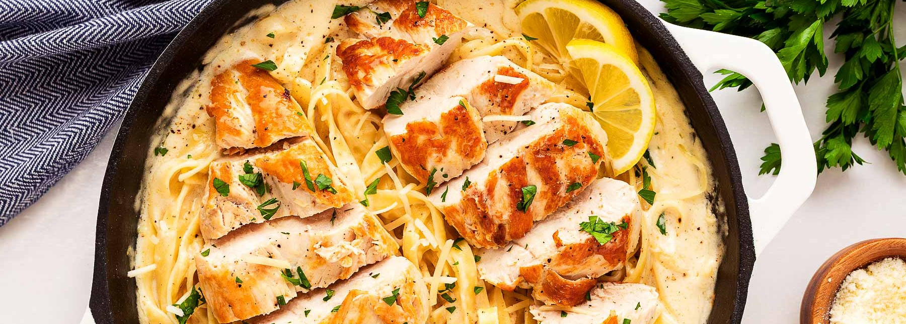

Creamy Lemon Chicken Pasta
Creamy Chicken Lemon Pasta is an easy, comforting meal that comes together quickly using rotisserie or leftover chicken. Tender chicken is tossed with pasta in a rich, creamy lemon sauce that’s bright, flavorful, and perfectly balanced. It’ s a simple weeknight dinner that feels a little special without requiring much time or effort.
Ingredients
- 8 ounces uncooked pasta
- 2 tablespoons of butter
- ½ tablespoon of flour
- 1 clove of garlic
- ¼ cup of chicken broth
- ½ tablespoon of lemon juice
- zest of ½ a lemon
- 1 cup of heavy whipping cream
- 2 cups of cooked/rotisserie chicken, shredded
- ⅓ freshly grated parmesan cheese
- Salt and pepper
- Garnish: fresh parsley and extra parmesan
Instructions
- Salt and boil a pot of water for the pasta, cook al dente according to package directions.
- When the pasta is approximately 10 minutes away from being done, add the butter to a skillet over medium-high heat. Once it melts, sprinkle the flour and cook for about a minute, stirring often.
- Add the garlic, followed by the chicken broth, and lemon juice + zest. Allow it to simmer for a minute.
- Whisk in the heavy whipping cream, then stir in the chicken, cook for a few minutes until the sauce has thickened up.
- Stir the parmesan cheese in and take the skillet off the heat. Season with salt and pepper to your liking.
- Add the drained pasta to the skillet and toss until coated (add a tablespoon or two of the pasta water to the sauce prior to draining it). Serve immediately with more parmesan and a bit of chopped parsley if desired.